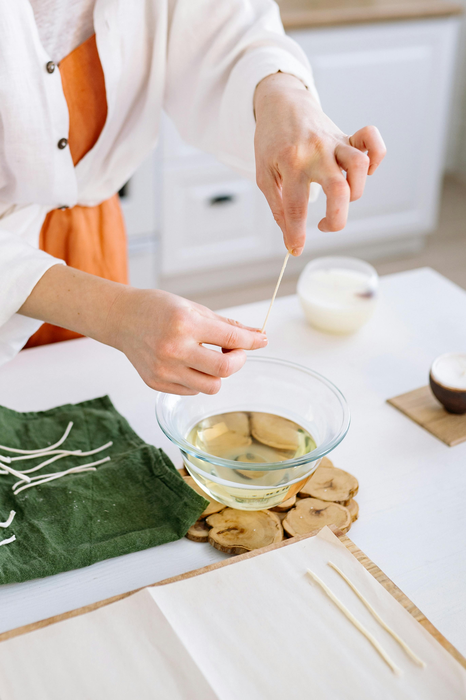
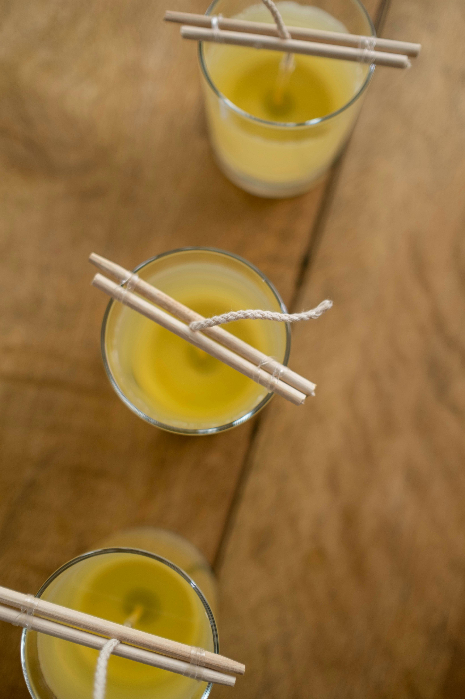
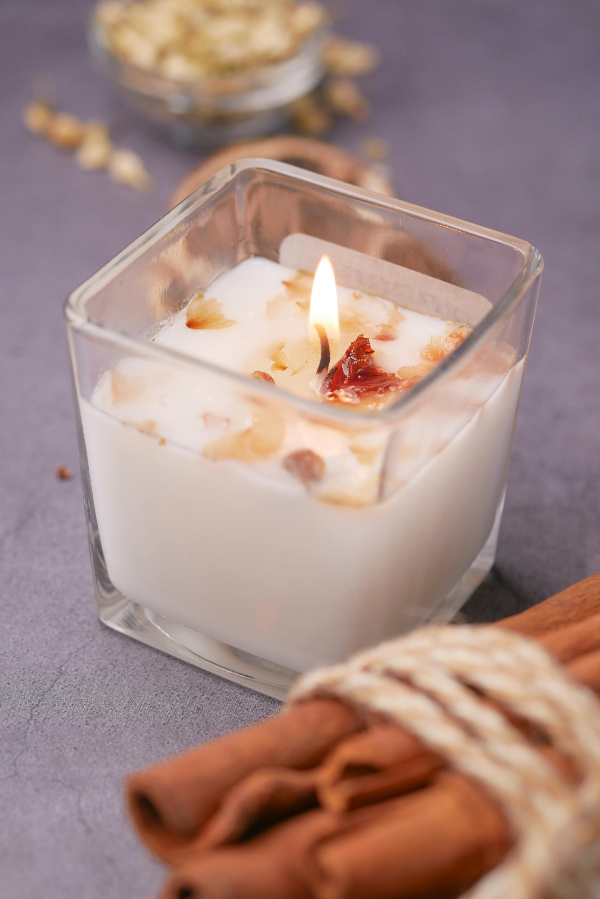

Cada peça é feita com carinho, atenção e dedicação — desde a escolha das fragrâncias, ceras e pavios, até os pequenos toques finais que tornam cada vela verdadeiramente especial. Nada é feito às pressas: todo o processo é artesanal, pensado com propósito e cuidado em cada detalhe. Valorizamos o tempo, a sensibilidade e a energia positiva colocados em cada criação, porque sabemos que isso se reflete no resultado final. Mais do que um objeto decorativo, nossas velas carregam sentimentos, intenções e a beleza do feito à mão. Acreditamos que quando algo é feito com amor, ele transforma. Por isso, cada vela que chega até você traz mais do que aroma e luz — ela entrega um pedacinho da nossa essência: conforto, presença, acolhimento e boas vibrações.

Os produtos utilizados são de altíssima qualidade, garantindo uma experiência única e sensorial para nossos clientes. Desde as ceras vegetais e essências premium até os pavios ecológicos e embalagens cuidadosamente escolhidas, cada material é selecionado com rigor e propósito. Nos preocupamos com cada detalhe: buscamos fragrâncias duradouras que preencham o ambiente de forma suave e acolhedora, uma queima limpa e uniforme que valoriza o uso da vela até o fim, e acabamentos impecáveis que transmitem sofisticação e cuidado. Essa atenção à qualidade não é apenas um diferencial — é uma expressão do nosso compromisso com o bem-estar, a harmonia e a beleza do que é feito à mão. Ao receber uma de nossas velas, você sente o resultado dessa dedicação em cada aroma, em cada chama, em cada momento de luz.

Produtos lindos, feitos com propósito, alma e cuidado. Cada vela artesanal nasce de um processo atencioso, onde estética, qualidade e significado caminham juntos. Mais do que decorar, elas foram criadas para despertar sensações, transformar o ambiente e trazer bem-estar — um convite ao acolhimento, à pausa e à presença. Acreditamos que são os pequenos detalhes que tornam o cotidiano mais leve e especial. Por isso, colocamos carinho em cada etapa: da escolha dos materiais ao acabamento delicado. Quando uma vela é acesa, ela não só ilumina — ela aquece, inspira, conecta e transforma o momento.